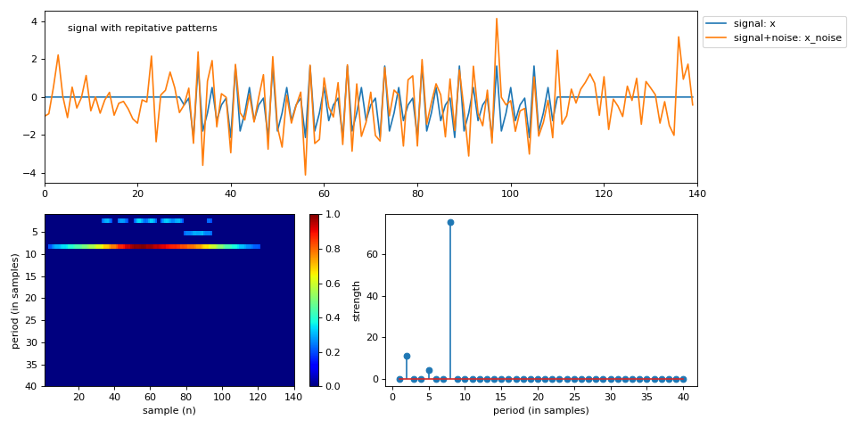

spkit.RFB¶
- spkit.RFB(x, Pmax=10, Rcq=10, Rav=2, Th=0.2, Penalty=None, return_filters=False, apply_averaging=True)¶
Ramanujan Filter Banks for Estimation and Tracking of Periodicity
Ramanujan Filter Banks for Estimation and Tracking of Periodicity
Warning
NOTE: Use
ramanujan_filterinstead. That is most updated version.RFBwill be removed in future release.- Parameters:
- x1d array, sequence of signal
- Pmaxthe largest expected period.
- RcqNumber of repeats in each Ramanujan filter
- RavNumber of repeats in each averaging filter
- ThOutputs of the RFB are thresholded to zero for all values less than Th*max(output)
- Penalt = penalty for each period shape=(len(Pmax)),
If None, then set to 1, means no penalty
- Returns:
- y: 2d array of shape = (len(x),Pmax)
time vs period matrix, normalized
- if return_filters==True,
also returns
FR : list of Ramanujan Filters
FA : list of Averaging Filters
See also
spkit# TODO
Notes
References
[1] S.V. Tenneti and P. P. Vaidyanathan, “Ramanujan Filter Banks for Estimation and Tracking of Periodicity”, Proc. IEEE Int. Conf. Acoust. Speech, and Signal Proc., Brisbane, April 2015.
[2] P.P. Vaidyanathan and S.V. Tenneti, “Properties of Ramanujan Filter Banks”, Proc. European Signal Processing Conference, France, August 2015.
Python impletation is done by using matlab code version from - http://systems.caltech.edu/dsp/students/srikanth/Ramanujan/
Examples
#sp.RFB import numpy as np import matplotlib.pyplot as plt import spkit as sp np.random.seed(2) #period = 10 #SNR = 0 period = 8 x1 = np.zeros(30) x2 = np.random.randn(period) x2 = np.tile(x2,10) x3 = np.zeros(30) x = np.r_[x1,x2,x3] x_noise = sp.add_noise(x,snr_db=0) Pmax=40 y,FR, FA = sp.RFB(x_noise,Pmax=Pmax, Rcq=15, Rav=2, Th=0.2,return_filters=True) print('top 10 periods: ',np.argsort(np.sum(y,0))[::-1][:10]+1) plt.figure(figsize=(12,6)) plt.subplot(211) plt.plot(x,label='signal: x') plt.plot(x_noise, label='signal+noise: x_noise') plt.text(5,3.5,f'signal with repitative patterns') plt.xlim([0,len(x)]) #plt.xlabel('sample (n)') plt.legend(bbox_to_anchor=(1,1)) plt.subplot(223) im = plt.imshow(y.T,aspect='auto',cmap='jet',extent=[1,len(x_noise),Pmax,1]) plt.colorbar(im) plt.xlabel('sample (n)') plt.ylabel('period (in samples)') plt.subplot(224) plt.stem(np.arange(1,y.shape[1]+1),np.sum(y,0)) plt.xlabel('period (in samples)') plt.ylabel('strength') plt.tight_layout() plt.show()
